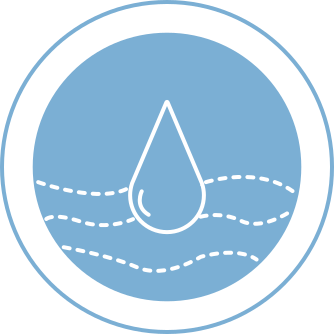
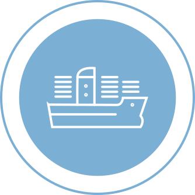

At SILFEN it means
putting action behind the words, considering all stakeholders and
always aiming a little bit higher when creating another collection.
We always strive to deliver high quality products in better materials.
SUSTAINABILITY
X
RESPONSIBILITY
As a young, global fashion brand, it is our duty to take care of the planet not only for own sake, but for all future generations to come.
We keep on implementing more conscious initiatives within the company, and we hope that this inspire you – our customers and consumers, as we are all in this together!
MATERIALS
At Silfen we believe in production which leaves as little footprint on our mother esrth as possible. That’s why we choose orgnacic or recylced materials.
WORK ETHICS
We feel responsibility not only for environment but especially for people who make Silfen happen. Read more what we are doing for them.
plastic essential
campaign Plastic Essential is a take on plastic as a sustainable material. In popular culture, we think of plastic in a negative light, however we ask our customers - is it better that plastic would end up as a bag or a litter? We introduce our rPET line, which is made of recycled plastic, collected from our seas and oceans.
COTTON
Our cotton is either made from eco-friendly or organic cotton. Both materials require far less water consumption than conventional cotton products.
LEATHER
Our leather is a bi product of the food industry, meaning that every part of the animal is utilized in various industries.
VEGAN
All non-leather material – e.g. our nylon, lacquer – are all 100% vegan, promising that these products do not contain any parts from animals.
rPET
rPET is primarily made from plastic waste collected from the oceans, or from recycled plastic bottles gathered from all over the world.
Our work ethics
WATER
We try to minimize the water consumption in our production in an effort to decrease its negative impact on the environment and to ensure local access to clean water.
SHIPPING
We strive to ship as much as possible in bulk – mostly by sea or train. These are the most environmentally friendly modes of shipping, reducing polluting emissions.
WORK CONDITIONS
Our factories provide insurance and also grant pensions to all employees, providing them with financial stability after retirement. Our employees have the right to engage with rituals, prayers etc. at any time. We condemn discrimination, and make sure that the employees are protected from prejudice and injustice at the workplace. We visit our manufacturers regularly to ensure that they follow the issued principles regarding working conditions, quality, pollution.